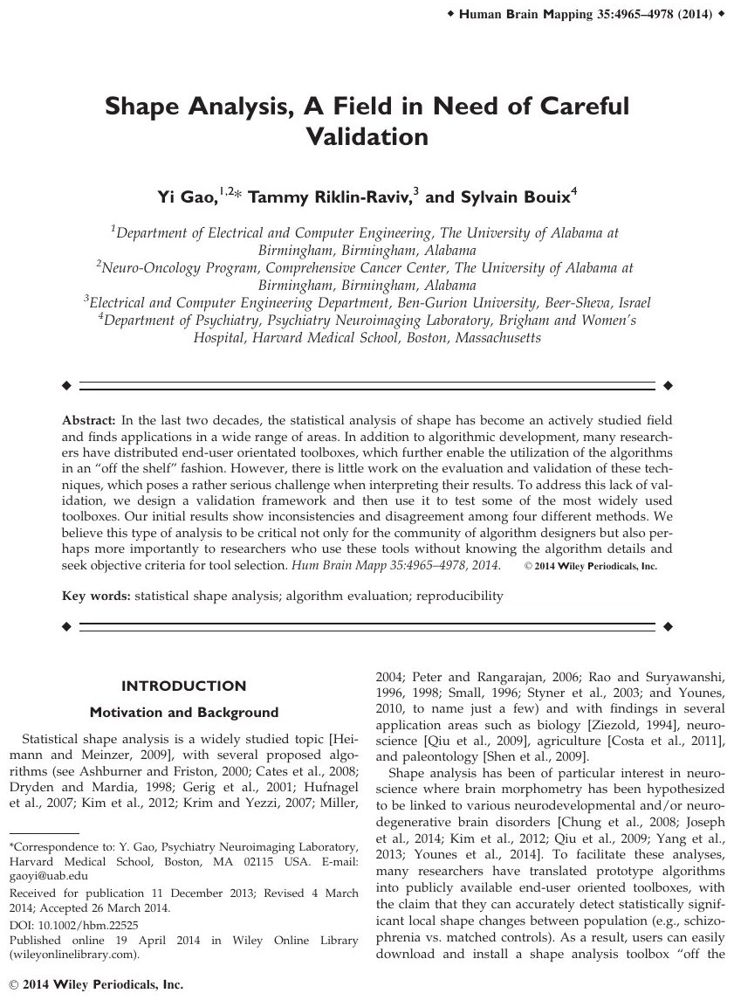
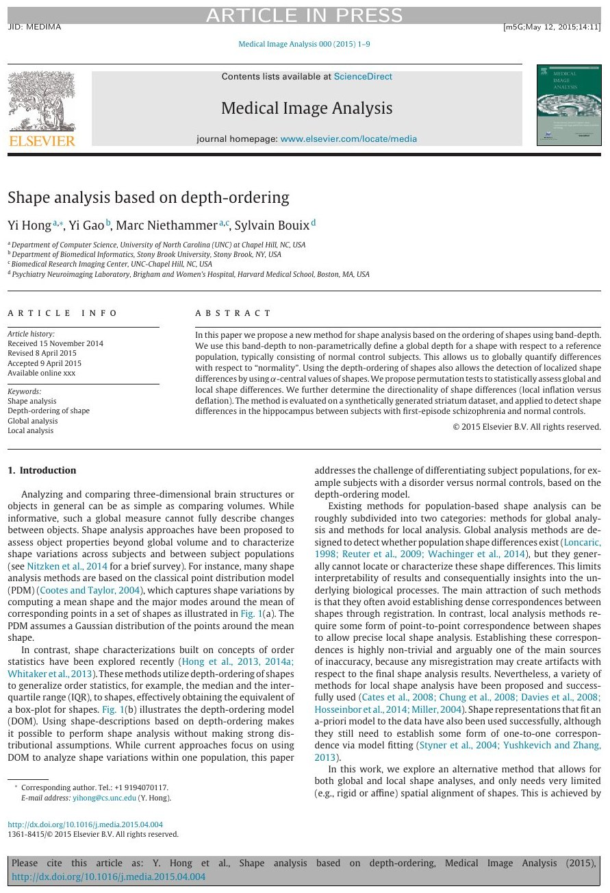
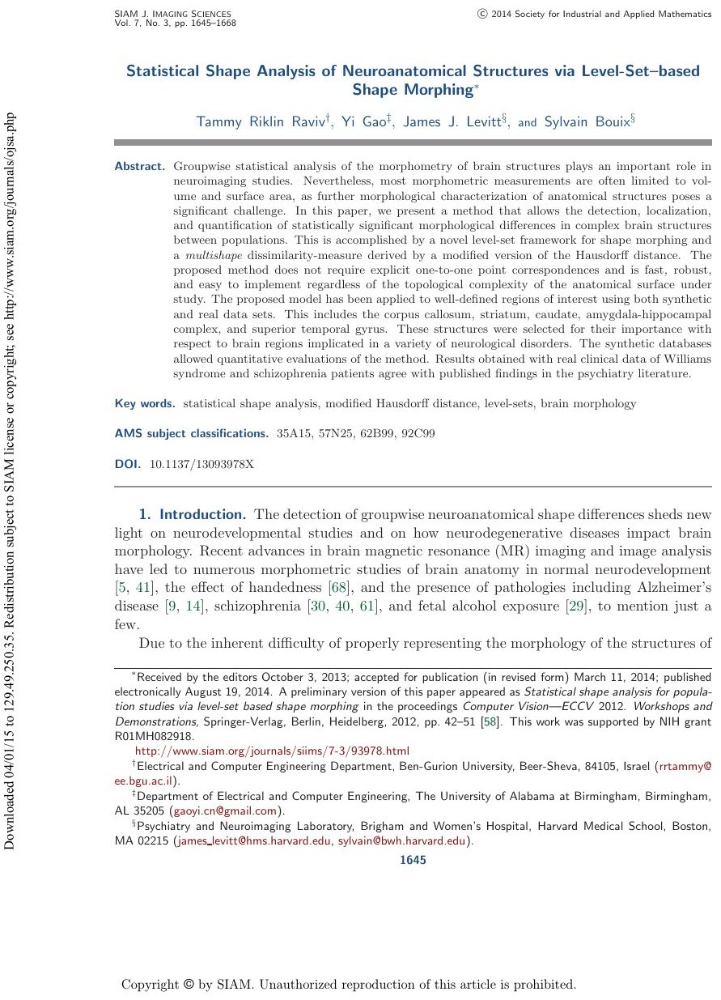

综述
带验证的定量形态度量：泊松方程形状分析、多尺度小波表示、深度排序，以及"形状分析需要认真验证"的方法学主张。
- 三维泊松形态度量与定量验证（MedIA 2016）
- 任意拓扑的多尺度小波表示（MedIA 2012）
- SPoM 软件开源并提供 Docker 镜像
05 · 代表工作
代表工作
每张卡片：上方配图，下方要点。
01

Statistical shape analysis using 3D Poisson equation — a quantitatively validated approach
Medical Image Analysis · 2016
- 基于三维泊松方程的新型形态度量。
- 首个形状分析方法的定量验证框架。
02

Multiscale 3D shape representation and segmentation with applications to hippocampal/caudate extraction from brain MRI
Medical Image Analysis · 2012
- 任意拓扑形状的多尺度小波分解。
- 应用于 MRI 海马与尾状核提取。
03

Shape analysis, a field in need of careful validation
Human Brain Mapping · 2014
- 立场文章：形状分析需要认真验证。
- 提出形态度量的验证方法学。
04

Shape analysis based on depth-ordering
Medical Image Analysis · 2015
- 深度排序赋予形状天然的内外描述。
- 面向复杂几何的拓扑感知表示。
05

Statistical shape analysis of neuroanatomical structures via level-set–based shape morphing
SIAM Journal on Imaging Sciences · 2014
- 基于水平集的形状渐变用于群体研究。
- 无需对应的神经解剖统计分析。